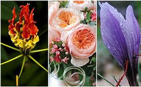

A Legszebbnek mondott tulipán

Hollandiában őshonos, de ez nem egy átlagos díszítő növény, a gondozása nagy odafigyelést igényel. Szakértők szerint vadon nem is nőne ki, ment sok más tulipánok.
A Legritkább tulipán
Egy 17. századi tulipán, a „Semper Augustus" A történelem legdrágább virága a „Semper Augustus", melyet szépsége és ritkaságszámba menő volta rendkívül értékessé tett. Az ára felbecsülhetetlen, 1637-ben 1 szálért 10 000 guldent (Holland forint) kértek.

A legfőbb jellemzők, ami nélkül nem tulipán a tulipán:
2. Levelei hosszúkásak, simák, a hagymából fejlődnek ki.
3. A virágot a hagymából fejlődő tőkocsányon fejleszti ki.
4. A virág 6 lepellevélből áll. A virág színe fajtánként eltérő,változatos.
Na igen, de ezek csak az alapok A tulipánok nemzetsége ennél sokkal, de sokkal többet tud, ezt szeretném Önnek bemutatni a cikkemben, hiszen a tulipánoknak száznál is több faja, és több ezer nemesített fajtája ismert.
Hogyan igazodjunk el a rengeteg tulipánfajta között?
Különböző típusai vannak, íme a legfontosabbak:
-Botanikai tulipánok: A szülőfajok bélyegei és természetes megjelenését nagyjából megőrizték. Vad fajok, és hibrid fajták összefoglaló neve. Alacsony száron hozzák virágukat. Magasság: 15 - 20 cm
-Greigii tulipán hibridek: Virágzási idő: március közepe Magasság: 10 - 20 cm Fajták pl.: 'Yellow Dawn, 'Ontario'
-Kaufmanniana tulipán hibridek: Már február végén, március elejétől nyílnak. Magasság: 15 - 25 cm Napfényben szélesre tárulnak a virágaik. Fajták pl.: 'The First, 'Daylight'
-Korai tulipánok: Virágzási idő: április Magasság: 25 - 40 cm Fajták pl.: 'Diana', 'Brillant Star', 'Joffre'
-Középkorai tulipánok: Virágzási idő: április Magasság: 40 - 60 cm
-Kései tulipánok: Virágzási idő: április - május Magasság: 40 - 60 cm
-Rojtos tulipánok: pl.: 'Hamilton', 'Fancy Frills'
-Zöld virágú tulipánok: Fajták pl.:’Spring Green’
-Papagáj tulipán: Csipkés szélű lepellevelek jellemzik. Fajták pl.: 'White Parrot', 'Red Champion'
Hogyan ültessük a tulipánt virágládába?
1. A virágládánk aljára tegyünk kavics, és homokréteget.
2. Ültetőközegnek virágföldet használjunk.
3. Ültessük el a tulipánhagymákat kb. 10 cm mélyre.
A Tulipán virágládába való ültetése
Tulipán gondozása cserépben
A tulipán gondozása cserépben nem bonyolult, de odafigyelést igényel, mivel az ősszel cserépbe ültetett tulipánnak is biztosítani kell a megfelelő környezeti feltételeket.
1. Ezért lakásában is hűvös, árnyékos helyre tegye. Az ősztől tél végéig tartó időszakban csak kevés vizet adjon cserepes tulipánjainak, mivel a sok öntözővíz a hagymák rothadásához vezethet.
2. Tél vége felé, mikor az első hajtások megjelennek, a cserepes tulipánt már melegebb, napfényes helyre vigye át! Ügyeljen arra,hogy öntözés után a cserép ne álljon vízben huzamos ideig, mivel a tulipán nem tűri a pangó vizet.
3. A tulipán meleg szobában hamar elvirágzik. Azért, hogy tovább gyönyörködhessen a virágjában, hűvös, napfényes szobában helyezze el!
4. Az elvirágzás után várja meg, amíg a virág, és a levelek is elszáradnak, majd távolítsa el az elszáradt részeket! Ezt követően a tulipánhagyma kiemelhető a cserépből.
5. Sötét, száraz helyen tárolja, hogy ősszel majd újra elültethesse.
A tulipánhagyma felszedése
A következő tavasz virágpompája érdekében fontos, hogy felszedjük a tulipánhagymákat.
Hogyan történik a tulipánhagymák felszedése?
A tulipánhagymákat az elvirágzás után kell felszedni, mikor már a levelei elszáradtak. A tulipánhagymák ilyenkor már biológiailag érettek, regenerálódtak, visszahúzódtak a talajba. Vigyázzunk, hogy felszedéskor a hagyma ne sérüljön!
A tulipánhagymákat felszedés után célszerű megszikkasztani, félárnyékos helyen. A könnyen leváló pikkelyleveleket el kell távolítani. A fertőzött hagymákat semmisítsük meg! Tulipánhagymáinkat hálóba téve áztassuk gombaölőszer oldatba! Ezután jól megszikkasztva tároljuk őket kiültetésig.
A Tulipánhagyma felszedése videón